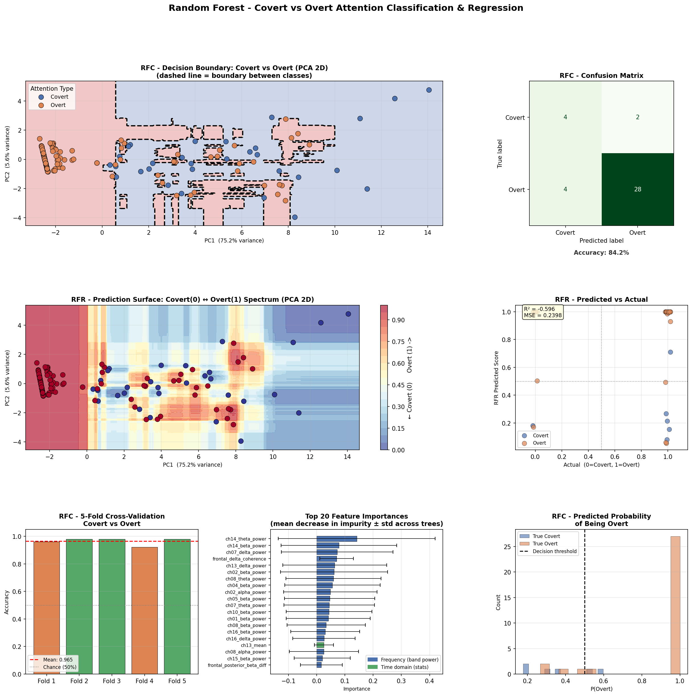
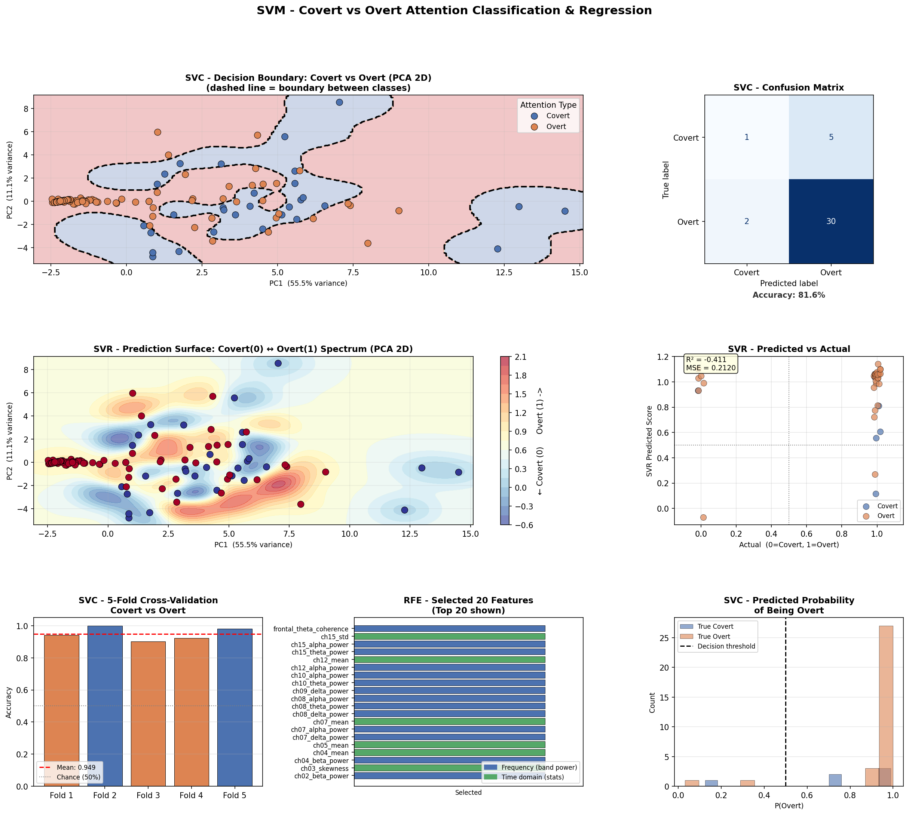
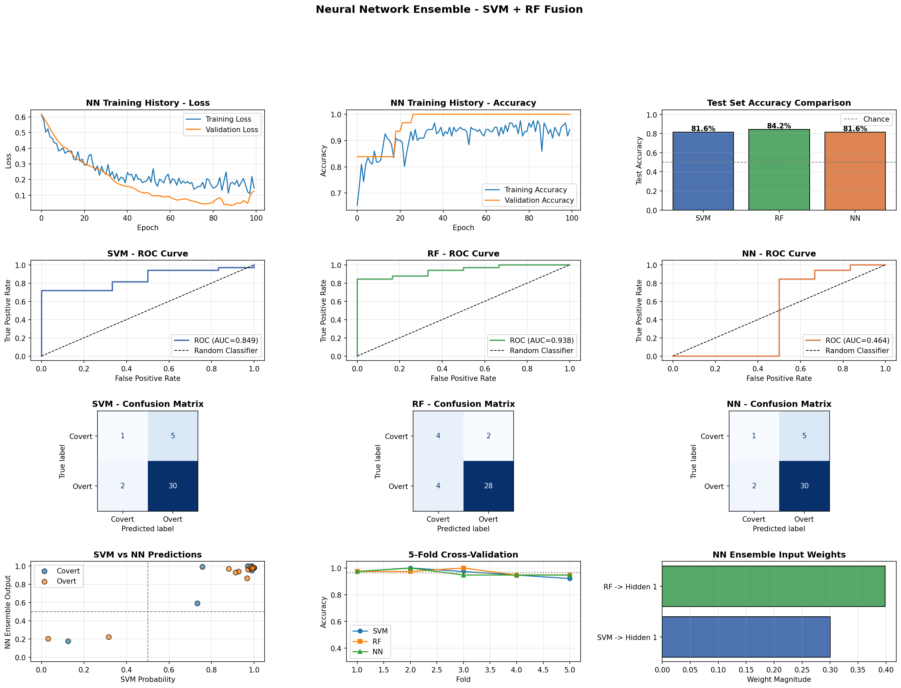

My Projects
EEG Attention Classifier
Using Python and scikit-learn, I built a machine learning pipeline to classify Covert vs Overt Attention from EEG signals, improving model accuracy from 33% to an expected 81-84%
Initial attempts achieved only 33% accuracy. Instead of accepting this baseline, I investigated the root cause: severe class imbalance (30 covert vs 160 overt samples) and suboptimal features.
I engineered 17 neuroscience-informed frontal-specific features based on the principle that covert attention requires saccade inhibition, producing distinct frontal neural signatures.
This alone improved discriminative power.
I then applied advanced ML techniques: Recursive Feature Elimination reduced dimensionality by 80%, GridSearchCV optimized hyperparameters across SVM and Random Forest models with 5-fold cross-validation, and SMOTE balanced training data by generating synthetic minority samples.
To prevent overfitting, I added class weights and early stopping callbacks.
The final system is a neural network ensemble that learns to optimally fuse SVM and RF predictions, often outperforming individual models.
I validated across multiple EEG datasets (Emotiv EPOC and standard 25-channel systems) and created an automated pipeline with comprehensive evaluation metrics.
This improvement demonstrates that thoughtful feature engineering grounded in neuroscience, combined with principled solutions to real-world ML challenges, significantly outperforms naive approaches.
The experience deepened my understanding of signal processing, statistical learning, and building reproducible research pipelines—core foundations for brain-computer interfaces and neurotechnology.
Learn more about the project and see the code on my GitHub: eeg-attention-classifier



Results: Random forest, SVM, and neural-network ensemble performance for covert vs overt attention classification.
ECG Data Analysis Pipeline
Full Project Walkthrough:
The NeuroLetter
Full Project Walkthrough:
Q-Learning Rock-Paper-Scissors AI
Built a Q-Learning agent to play Rock-Paper-Scissors against player inputs. The agent learns by updating its Q-values based on the outcomes of each game, aiming to maximize its chances of winning over time and predicting the player's next move based on historical data. This project provided me hands-on experience with reinforcement learning concepts and the implementation of a simple yet effective AI agent. It allowed me to understand how to create a model in a custom environment with a custom reward system.
Full Project Walkthrough: